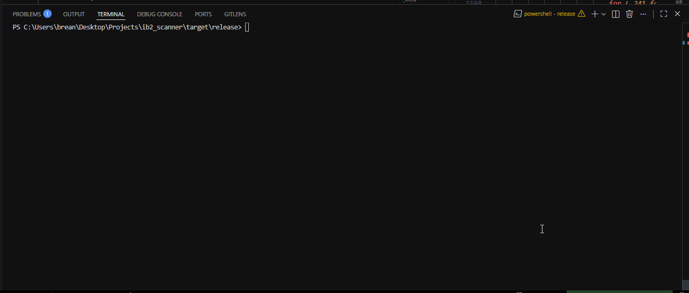
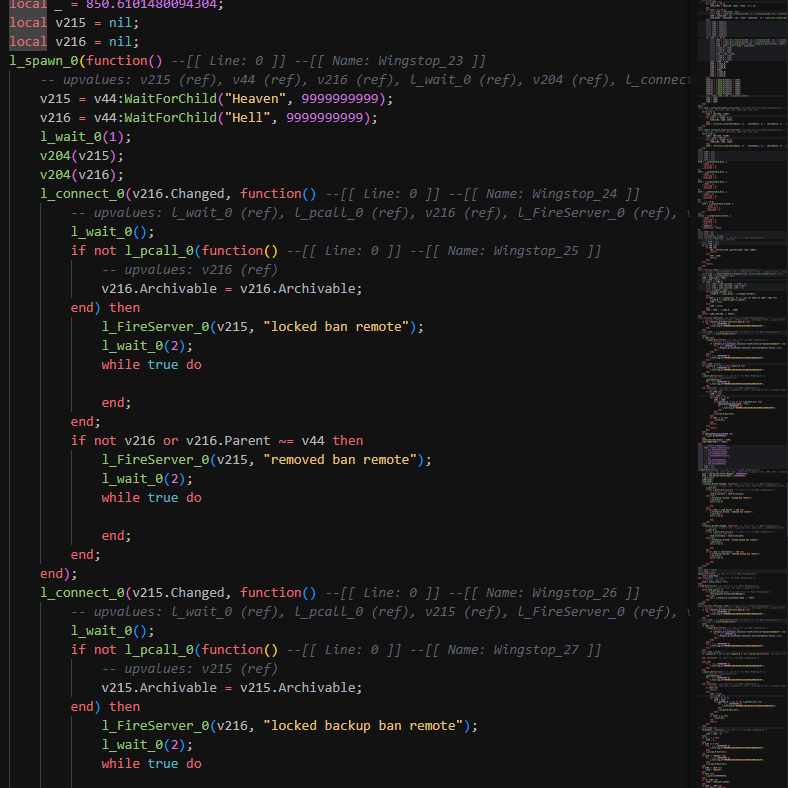

Zackaria Alaou
alias chwsalt
Candidat en licenceUniversity applicant
Je code en autodidacte depuis plusieurs années, surtout du bas niveau et de la rétro-ingénierie. Mon année de césure m'a servi à aller plus loin, et à reprendre sérieusement les maths qui vont avec : j'ai refait tout le programme de terminale, puis appris le reste au fur et à mesure de mes projets, théorie des nombres, arithmétique modulaire, calcul vectoriel, un peu de théorie des graphes. Ce qui me plaît, c'est de comprendre comment les choses marchent vraiment, en dessous.
I've been a self-taught programmer for several years now, mostly low-level work and reverse engineering. My gap year was for pushing further, and for going back seriously to the maths behind it: I re-did the whole French final-year maths curriculum, then learned the rest as my projects demanded, number theory, modular arithmetic, vector geometry, a bit of graph theory. What I like is understanding how things really work underneath.
Mon annéeMy year
Maths. J'ai repris tout le programme de terminale spé pour avoir des bases solides (analyse, suites, probas, géométrie, arithmétique), et j'ai creusé le reste au fur et à mesure de ce que mes projets demandaient : arithmétique modulaire et théorie des nombres, calcul vectoriel et équations du second degré, un peu de théorie des graphes.
Programmation. Mes langages principaux, c'est C# / .NET et C++. J'utilise aussi Luau pour Roblox et Python pour automatiser mes tâches.
Le reste. J'ai touché à la rétro-ingénierie, à la cryptographie, à la rédaction de démonstrations et aux tests automatisés. Et j'ai appris l'anglais tout seul sur internet, jusqu'à atteindre le niveau C2 à l'écrit et en compréhension écrite, et C1 à l'oral.
Mathematics. The French final-year maths curriculum re-done in full to solidify my foundations (analysis, sequences, probability, geometry, arithmetic), then deeper notions as my projects required: modular arithmetic and number theory, vector geometry and quadratic equations, basic graph theory.
Programming. C# / .NET and C++ as my main languages, Luau for Roblox, and Python for automation.
Other. Reverse engineering, cryptography, writing proofs, automated testing, and English taught to myself online, up to a C2 level in writing and reading comprehension, and C1 in speaking.
ProjetsProjects
Le code source de certains projets n'est pas public (l'anticheat est commercialisé, le dé-virtualiseur n'est pas terminé). Extraits disponibles sur demande.
Some projects' source code is not public (the anti-cheat is sold commercially, the devirtualizer is unfinished). Excerpts available on request.
Obelisk
J'écris Obelisk, un outil en C# qui s'attaque aux scripts Lua protégés par virtualisation et en récupère une version lisible. Il décode le bytecode caché, le remonte dans une représentation intermédiaire sous forme de graphe, puis simplifie ce graphe passe après passe jusqu'à retrouver la logique d'origine. C'est mon projet de rétro-ingénierie le plus poussé, encore en cours.
I'm building Obelisk, a C# tool that takes on Lua scripts protected by virtualization and recovers a readable version. It decodes the hidden bytecode, lifts it into an intermediate representation as a graph, then simplifies that graph pass after pass until the original logic comes back. It's my most involved reverse-engineering project so far, still in progress.
DétailsDetails
C# / .NET · compilation · théorie des graphesC# / .NET · compilers · graph theory
La chaîne : extraction (décompression LZW + déchiffrement XOR), représentation intermédiaire du jeu d'instructions Lua 5.1 organisée en graphe de flot de contrôle, dé-aplatissement du flot, puis optimisation (pliage des branches, code mort, fusion) répétée jusqu'à un point fixe.
The pipeline: extraction (LZW decompression + XOR decryption), an intermediate representation of the Lua 5.1 instruction set organized as a control-flow graph, control-flow unflattening, then optimization (branch folding, dead code, merging) repeated until a fixed point.
La déobfuscation IB2 est un projet mené avec Blastbrean, un ami rencontré en ligne en 2024 qui partage les mêmes passions et les mêmes objectifs que moi. Voici le résultat : d'abord le script obfusqué en cours d'analyse, puis le code d'origine récupéré.
The IB2 deobfuscation is a project done with Blastbrean, a friend I met online in 2024 who shares the same passions and goals as me. Here is the result: first the obfuscated script being analyzed, then the recovered original code.


Ce que ça m'a appris : les bases des compilateurs (représentation intermédiaire, passes), la modélisation par graphes orientés, l'analyse de flot de données et la notion de point fixe d'un opérateur, la rigueur (tests, invariants).
What it taught me: compiler basics (intermediate representation, passes), modeling with directed graphs, data-flow analysis and the notion of a fixed point of an operator, and rigor (tests, invariants).
On applique un opérateur $\mathcal{O}$ (plier, élaguer, fusionner) jusqu'à ce que plus rien ne change, un point fixe : $$ T_{k+1} = \mathcal{O}(T_k), \qquad \text{jusqu'à } \mathcal{O}(T^\star) = T^\star. $$
We apply an operator $\mathcal{O}$ (fold, prune, merge) until nothing changes anymore, a fixed point: $$ T_{k+1} = \mathcal{O}(T_k), \qquad \text{until } \mathcal{O}(T^\star) = T^\star. $$
Code source non public : projet non terminé, contournable s'il était diffusé.
Source code not public: unfinished, and easily worked around if leaked.
Anti Gaming Chair
Anti Gaming Chair, c'est un anticheat que j'ai écrit pour des jeux Roblox, et que je vends. Il est polymorphe : au lieu d'avoir des scripts de détection fixes (faciles à repérer et à contourner), le serveur envoie les détections au client à la volée, dans des petits scripts jetables et isolés qui changent à chaque fois. Le client se contente de remonter des infos ; chaque réponse est chiffrée et liée à un défi unique, et c'est le serveur qui décide de bannir. Toute la crypto, un ChaCha20 que j'ai codé de zéro, protège ce canal. Aujourd'hui il tourne sur Real Futbol 25, un jeu Roblox qui a dépassé 200 millions de visites.
Anti Gaming Chair is an anti-cheat I wrote for Roblox games and sell. Its architecture is polymorphic: instead of fixed detection scripts (easy to spot and bypass), the server streams detections to the client on the fly, in disposable, isolated scripts that change every time. The client only reports signals, each response encrypted and tied to a unique challenge; the server decides whether to ban. All the crypto, a ChaCha20 I wrote from scratch, protects that channel. It currently protects Real Futbol 25, a Roblox game with over 200 million visits.
DétailsDetails
Luau · cryptographie · anticheat polymorpheLuau · cryptography · polymorphic anti-cheat
J'ai fait le client et le serveur. Je fouille et je reverse les cheats créés pour le jeu, je monte des détections ciblées, et je bannis aussi bien les cheats publics que privés. L'idée, c'est de rendre le contournement le plus pénible possible : bans différés, obfuscation, détections qui changent tout le temps pour épuiser les reversers. Au final, le système bannit des dizaines de tricheurs par jour.
I built both the client and the server. I investigate and reverse the cheats made for the game, write targeted detections, and ban both public and private cheats. The goal is to make bypassing as costly as possible: delayed bans, obfuscation, and detections that keep changing to wear down reversers. In practice, the system bans dozens of cheaters a day.
En pratique, chaque détection part dans son propre script, parfois isolé dans un « actor » (un contexte d'exécution à part), et chaque réponse est scellée par un chiffrement authentifié lié à un défi aléatoire. Sans la clé, un tricheur ne peut ni fabriquer un faux « rien détecté », ni rejouer une vieille réponse.
In practice, detections are shipped as separate scripts, sometimes isolated in “actors” (separate execution contexts), and every response must be sealed with authenticated encryption tied to a random challenge: without the key, a cheater can neither forge a “nothing detected” nor replay an old response.
OnClientInvoke).
The anti-cheat architecture: the server deploys and runs detections on a schedule,
and the client answers through a single centralized channel (one OnClientInvoke).

Un exemple de version générée (la même preuve, habillée autrement) :
An example generated version (the same proof, dressed differently):
local _rxhxpfkklm = 2710748781
return function(e, epoch)
local h = _rxhxpfkklm % 0x100000000
h = (h * 2183506248 + e[1]) % 0x100000000
h = (h * 2127657666 + e[2]) % 0x100000000
h = (h * 3937266515 + epoch) % 0x100000000
return h -- le serveur recalcule la meme valeur et compare
endEn codant la crypto à la main, j'ai dû comprendre chaque étape du chiffrement plutôt que de l'utiliser en boîte noire. C'est là que se trouvent les mathématiques du projet.
Writing the crypto by hand forced me to understand every step of the cipher instead of using it as a black box. That's where the maths of the project are.
Ce que ça m'a appris : la cryptographie symétrique et l'arithmétique modulaire (opérations dans $\mathbb{Z}/2^{32}\mathbb{Z}$), le schéma ARX (Addition, Rotation, XOR), le modèle de confiance client/serveur : ce qu'on peut, ou non, garantir.
What it taught me: symmetric cryptography and modular arithmetic (operations in $\mathbb{Z}/2^{32}\mathbb{Z}$), the ARX scheme (Addition, Rotation, XOR), and the client/server trust model: what you can, and cannot, guarantee.
L'opération de base (le quarter-round) combine une addition modulo $2^{32}$, un ou-exclusif $\oplus$ et une rotation circulaire $\lll$ : $$ a \leftarrow a + b \ (\mathrm{mod}\ 2^{32}), \qquad d \leftarrow (d \oplus a) \lll 16. $$
The core operation (the quarter-round) combines an addition modulo $2^{32}$, an exclusive-or $\oplus$ and a circular rotation $\lll$: $$ a \leftarrow a + b \ (\mathrm{mod}\ 2^{32}), \qquad d \leftarrow (d \oplus a) \lll 16. $$
Code source non public : anticheat commercialisé. Extraits sur demande.
Source code not public: the anti-cheat is sold commercially. Excerpts on request.
RSA
J'ai réécrit RSA de zéro, mais surtout j'ai voulu démontrer proprement pourquoi ça marche. La sécurité tient à un truc simple à dire : multiplier deux grands nombres premiers, c'est facile ; retrouver ces deux nombres à partir du produit, non. Le vrai boulot, c'est la preuve que chiffrer puis déchiffrer redonne exactement le message de départ.
I re-implemented RSA from scratch, but mostly I focused on proving properly why it works. The security comes down to one simple thing: multiplying two large primes is easy, recovering them from the product is not. The real work is the proof that encrypting then decrypting gives the message back exactly.
DétailsDetails
Arithmétique · théorie des nombres · démonstrationArithmetic · number theory · proof
On prend deux nombres premiers $p$ et $q$, et on pose $n = pq$. Les exposants $e$ (public) et $d$ (privé) sont choisis pour que $ed \equiv 1 \pmod{\varphi(n)}$, avec $\varphi(n) = (p-1)(q-1)$. Chiffrer, c'est calculer $m^e$ ; déchiffrer, c'est calculer $m^d$.
We take two primes $p$ and $q$ and set $n = pq$. The exponents $e$ (public) and $d$ (private) are chosen so that $ed \equiv 1 \pmod{\varphi(n)}$, with $\varphi(n) = (p-1)(q-1)$. Encrypting means computing $m^e$; decrypting means computing $m^d$.
Pourquoi déchiffrer annule-t-il le chiffrement ? Il faut montrer que $(m^e)^d = m^{ed}$ redonne $m$. Comme $ed \equiv 1 \pmod{\varphi(n)}$, on peut écrire $ed = 1 + k\,\varphi(n)$, donc $$ m^{ed} = m^{\,1 + k\varphi(n)} = m \cdot \big(m^{\varphi(n)}\big)^{k}. $$ Le théorème d'Euler dit que $m^{\varphi(n)} \equiv 1 \pmod{n}$ (quand $m$ est premier avec $n$). Le gros facteur vaut donc $1$, et il reste $\; m^{ed} \equiv m \pmod{n}$ : on retombe exactement sur le message de départ.
Why does decrypting undo encrypting? We need to show $(m^e)^d = m^{ed}$ gives back $m$. Since $ed \equiv 1 \pmod{\varphi(n)}$, we can write $ed = 1 + k\,\varphi(n)$, so $$ m^{ed} = m^{\,1 + k\varphi(n)} = m \cdot \big(m^{\varphi(n)}\big)^{k}. $$ Euler's theorem says $m^{\varphi(n)} \equiv 1 \pmod{n}$ (when $m$ is coprime to $n$). The big factor is therefore $1$, leaving $\; m^{ed} \equiv m \pmod{n}$: we land exactly on the original message.
Ce que ça m'a appris : les congruences, l'inverse modulaire, le théorème d'Euler, l'algorithme d'Euclide étendu (Bézout), et le fait de rédiger une preuve proprement.
What it taught me: congruences, the modular inverse, Euler's theorem, the extended Euclidean algorithm (Bézout), and writing a clean proof.
def extended_euclid(a, b): # extended Euclid -> Bezout
if b == 0:
return (a, 1, 0)
g, u, v = extended_euclid(b, a % b)
return (g, v, u - (a // b) * v)
def modular_inverse(e, phi): # d such that e*d = 1 (mod phi)
g, u, _ = extended_euclid(e, phi)
if g != 1:
raise ValueError("e and phi are not coprime")
return u % phi
p, q = 61, 53
n, phi = p * q, (p - 1) * (q - 1) # n = 3233, phi = 3120
e = 17
d = modular_inverse(e, phi) # 2753
m = 42
c = pow(m, e, n) # 2557
assert pow(c, d, n) == m # back to 42Auto-défenseAuto-defense
J'ai repris un système de parade automatique (un fork) et j'en ai retravaillé la prédiction. Le principe : ne pas viser là où la cible est, mais là où elle va être, et compenser le ping pour ne pas frapper en retard. J'ai mis tout ça en équations avec des vecteurs et une équation du second degré.
I took an automatic parry system (a fork) and reworked its prediction. The idea: don't aim where the target is, but where it's going to be, and compensate for ping so you don't hit late. I turned all of that into maths with vectors and a quadratic equation.
DétailsDetails
Cinématique · vecteurs · latence (ping)Kinematics · vectors · latency (ping)
Position future d'une cible à vitesse constante : $\vec{P}(t) = \vec{P}_0 + \vec{v}\,t$. Comme il y a un délai réseau $\tau \approx p/2$ (avec $p$ le ping), on vise la position décalée $\vec{P}(t+\tau)$ et on déclenche en avance : $t_{\text{action}} = t_{\text{impact}} - \tau - t_{\text{réaction}}$.
Future position of a target at constant velocity: $\vec{P}(t) = \vec{P}_0 + \vec{v}\,t$. Since there's a network delay $\tau \approx p/2$ (with $p$ the ping), we aim at the shifted position $\vec{P}(t+\tau)$ and trigger early: $t_{\text{action}} = t_{\text{impact}} - \tau - t_{\text{reaction}}$.
Pour toucher là où elle sera, avec un tir de vitesse $s$ depuis $\vec{I}$, on résout $\lVert \vec{P}(t) - \vec{I}\rVert = s\,t$, ce qui donne, avec $\vec{D} = \vec{P}_0 - \vec{I}$, une équation du second degré : $$ (\lVert \vec{v}\rVert^2 - s^2)\,t^2 + 2(\vec{D}\cdot\vec{v})\,t + \lVert \vec{D}\rVert^2 = 0, $$ résolue par le discriminant (plus petite racine positive $t^\star$).
To hit where it will be, with a shot of speed $s$ from $\vec{I}$, we solve $\lVert \vec{P}(t) - \vec{I}\rVert = s\,t$, which gives, with $\vec{D} = \vec{P}_0 - \vec{I}$, a quadratic equation: $$ (\lVert \vec{v}\rVert^2 - s^2)\,t^2 + 2(\vec{D}\cdot\vec{v})\,t + \lVert \vec{D}\rVert^2 = 0, $$ solved via the discriminant (smallest positive root $t^\star$).
Ce que ça m'a appris : la modélisation d'un mouvement par des vecteurs, le produit scalaire et la norme, la mise en équation d'un problème réel et sa résolution par le discriminant, et l'idée de compensation de latence.
What it taught me: modeling motion with vectors, the dot product and norm, turning a real problem into an equation and solving it via the discriminant, and the idea of latency compensation.
ExpérienceExperience